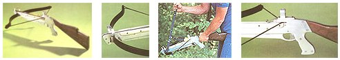

1) Our fieldpiece looks and functions like many of the more expensive manufactured crossbows. 2) The front sight is a strap of aluminum fitted with a bead. The steel cocking rod gives the cocking lever (3) a forward mount when the string is being drawn. 4) This prototype has no trigger safety, but one can be added.